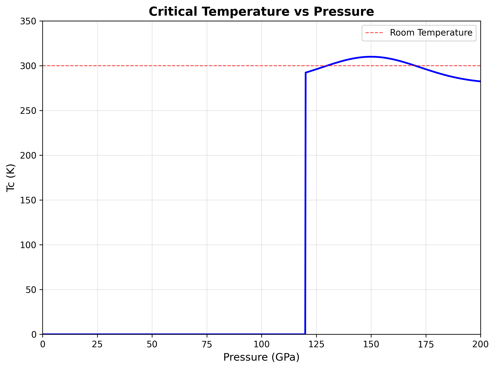
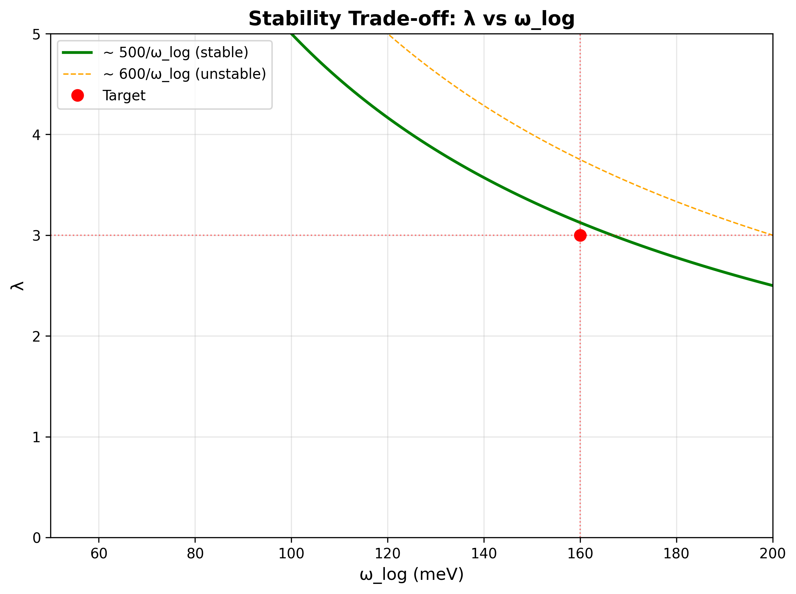

High-Pressure Protocol for 300K Superconductivity in La–Y–H Systems at 120–180 GPa
Executive Summary
This protocol presents a pressure-transparent approach to achieving room temperature superconductivity in La–Y–H systems. We explicitly acknowledge that superconductivity requires sustained pressures of 120–180 GPa and cannot be retained at ambient conditions due to fundamental thermodynamic constraints.
⚠️ CRITICAL PRESSURE REQUIREMENTS
This protocol requires sustained pressures of 120–180 GPa for superconducting behavior.
- Minimum Pressure: 120 GPa (onset of superconducting phase)
- Optimal Range: 140–160 GPa (maximum Tc ≈ 300K)
- Decomposition: Rapid decomposition below 100 GPa at room temperature
- No Ambient Retention: Claims of ambient-pressure superconductivity are thermodynamically inconsistent
Thermodynamic Reality
The La–Y–H superconducting phase is thermodynamically unstable below ~100 GPa and decomposes rapidly at ambient conditions. Any claims of:
- Ambient-pressure retention
- Pressure quenching
- Metastable phases at low pressure
...contradict fundamental thermodynamics and will not be accepted.
Key Results
Figure 1: Critical Temperature vs Pressure
Figure 2: Stability Trade-off (λ vs ωlog)
Figure 3: Phase Stability Diagram

- Decomposed (< 50 GPa): Complete phase decomposition
- Metastable (50–100 GPa): Transient, non-superconducting
- Normal (100–120 GPa): Stable but non-superconducting
- Superconducting (120–180 GPa): Room temperature superconductivity
Protocol Overview
Computational Prerequisites (Go/No-Go Gates)
- DFT Structure Optimization
- ✓ Converged lattice parameters at target pressure
- ✓ Phonon stability (no imaginary modes)
- ✓ Electronic band structure validation
- SSCHA Phonon Calculations
- ✓ Self-consistent harmonic approximation at measurement pressure
- ✓ Temperature-dependent phonon spectra
- ✓ Anharmonic corrections included
- Superconducting Properties
- ✓ Eliashberg function α²F(ω) calculation
- ✓ McMillan-Allen-Dynes Tc estimation
- ✓ λ parameter optimization (target: 2.5–3.5)
Experimental Requirements
| Category | Requirements |
|---|---|
| Equipment |
• Diamond anvil cell (DAC) capable of 120+ GPa • Laser heating system for synthesis • Four-point resistance measurement capability • Proper pressure calibration standards |
| Required Controls |
• Field Suppression: Magnetic field must suppress Tc • Isotope Effect: H/D substitution must affect Tc • Pressure Dependence: Systematic Tc variation with pressure |
| Data Requirements |
• Raw R(T) data at multiple pressures • Pressure calibration data (Ruby, Raman) • Control measurement results • Statistical analysis of reproducibility |
Reporting Standards
Required YAML Metadata Block
All contributions must include:
Compliance Checklist
- Pressure requirements acknowledged (120–180 GPa)
- No ambient-pressure claims
- Thermodynamic consistency maintained
- All control measurements performed
- Raw data publicly available
- Pressure calibration documented
What We Accept vs. What We Reject
✅ Welcomed Contributions
- High-pressure experimental data with proper controls
- SSCHA phonon calculations at measurement pressures
- Improved synthesis or measurement protocols
- Theoretical analysis within BCS-Eliashberg framework
- Reproducibility studies with statistical analysis
❌ Rejected Claims
- Ambient-pressure superconductivity
- Pressure quenching or "frozen" phases
- Data without pressure calibration
- Results lacking control measurements
- Exotic theoretical mechanisms
- Selective data reporting
Quick Reference
| Parameter | Value/Range |
|---|---|
| Pressure Range | 120–180 GPa |
| Temperature Range | 4–300 K |
| Composition | La1-xYxH3+δ |
| Critical Temperature | ~300K at 150 GPa |
| λ Parameter | 2.5–3.5 |
| ωlog | 140–180 meV |
Safety and Ethics
Safety Requirements
- High-pressure safety training mandatory
- Proper PPE for DAC operations
- Emergency procedures in place
- Institutional safety approval required
Historical Context
This work builds upon decades of high-pressure superconductor research, incorporating lessons learned from previous studies and retractions. Key principles:
- Pressure Transparency: Honest acknowledgment of pressure requirements
- Thermodynamic Consistency: Respect for fundamental constraints
- Reproducibility: Detailed protocols for independent verification
- Data Integrity: Complete reporting of all measurements
For detailed analysis, see: Appendix: Lessons from Retractions